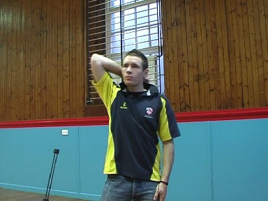
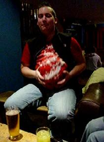
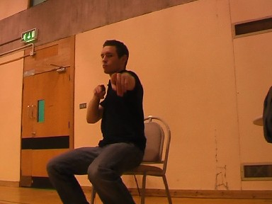

Jerome's Warm Up
Meet Jerome, our resident Mr Motivator. Before each session Jerome performs a warm up, but sometimes he gets carried away! This video was filmed on the 26th November 2005 at Edinburgh University Sports Centre, be warned, there's a sweary word!
You have been warned!
Craig's Dancing
Jerome's warm up is a hard act to follow, but as craig demonstrates, a slow start followed by an increase in pace is usually the way forward. Blame the beer. At least I hope it was the beer...
The Warm Up or The Sprint
Sound is always useful in this one, otherwise you can't truly appreciate the beats. Honest.
The Cheerleaders
Jerome must have been so in awe of Craig's prowess that he set up his very own cheerleading corps, fronted by himself and Delphine
1 pence prize to the first person who translates for us!
Presenting "Dangerous Jerome"
Not content with merely performing five press ups, Jerome decides to tackle the infamous "Chair of Death" - Jerome knows no fear as he defies wedgies aplenty to keep you on the edge of your seat... literally
"Heyyyyyyyyyyyyyyyyyyy, Fonzie!"